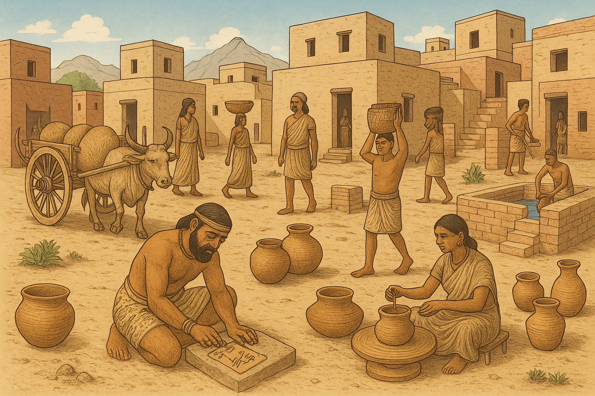

Overview
The Indus Valley Civilization (IVC) was one of the world's earliest urban civilizations, flourishing in the northwestern regions of South Asia. It is known for its sophisticated cities, advanced drainage systems, and impressive architecture.
Interactive Timeline
3300 BCE
Early Harappan phase begins with agricultural settlements.
2600 BCE
Major cities like Harappa and Mohenjo-Daro emerge.
2500 BCE
Peak of urban planning and trade networks with Mesopotamia.
1900 BCE
Gradual decline begins; cultural shifts observed.
1300 BCE
Final traces of the Indus Valley Civilization fade.
Architecture and Urban Planning
The cities were laid out in a grid pattern with sophisticated drainage and sewage systems. Buildings were constructed using baked bricks, and public structures like the Great Bath in Mohenjo-Daro show evidence of communal religious or ritual activities.

Culture and Daily Life
The Indus people were skilled artisans and traders. They produced a variety of goods such as pottery, beads, and seals, which were traded locally and with distant civilizations like Mesopotamia.

Language and Scripts
The Indus script remains undeciphered. The symbols on seals and pottery may represent a proto-writing system.

Decline and Legacy
Around 1900 BCE, the civilization began to decline. Despite its fall, the legacy of the Indus Valley Civilization continues to influence Indian culture and urban planning.